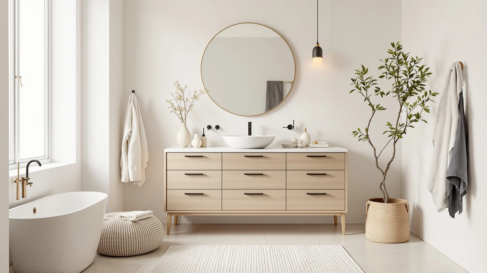

The Best 24-inch Vanity Cabinets (2026)
Prices and picks verified as of August 2026. Independent, reader-supported reviews.


Quick Answer
After comparing seven vanity cabinets ranging from a true 24-inch width to 60 inches on material, price, and verified owner reviews, the ARIEL Taylor 54-inch Bathroom Vanity is our top pick among the best 24-inch vanity cabinets and their wider alternatives, thanks to its quartz counter and soft-close hardware. If you need a cabinet that measures exactly 24 inches, the Yaheetech pick further down is built to that specific footprint.
Our pick: ARIEL Taylor 54-inch Bathroom Vanity — $1,461.00 Check Price on Amazon
Bottom line: our top pick is the ARIEL Taylor 54-inch Bathroom Vanity with Sink at $1. The best budget option is the ARIEL Hepburn 60-inch Double Bathroom Vanity with Sink at $1.
Things to Know Before You Buy
- "24-inch vanity cabinet" covers a range of widths. Only one of the seven cabinets we compared, the Yaheetech, is a true 24 inches wide; the rest run from 28 to 60 inches for readers who have a bit more wall space.
- MDF dominates the budget and mid-range tiers. Five of the seven cabinets use MDF or engineered wood construction, which keeps cost down but means standing water near the base should be wiped up quickly.
- ARIEL cabinets ship as complete quartz-topped units. Both ARIEL Hepburn models and the ARIEL Taylor include a matched quartz counter, so the higher price covers the full setup, not the cabinet alone.
- Review sample size varies widely. Ratings range from a 3-review ONBRILL listing to a 95-review Yaheetech listing, so a high star average on a thin sample deserves a second look before you buy.
- Sink configuration changes with width. Only the 60-inch ARIEL Hepburn cabinet offers a double-sink layout; every other cabinet in this comparison is single-sink.
The best 24-inch vanity cabinets aren't always the right fit once you start comparing real bathrooms, because plenty of shoppers searching that exact phrase actually have a few extra inches of wall space to work with. We compared seven vanity cabinets ranging from a true 24-inch Yaheetech model up to a 60-inch ARIEL double-sink cabinet, evaluating material, price, and verified owner reviews rather than picking by cabinet width alone. Our top pick, the ARIEL Taylor 54-inch Bathroom Vanity, earned that spot with a quartz counter and soft-close hardware that most 24-inch cabinets in this price range don't offer, but six other options cover tighter budgets and true 24-inch footprints.
We built this list by researching seven vanity cabinets from our product database that use the same freestanding cabinet construction found in budget-friendly 24-inch options, then compared their sizes, materials, and pricing side by side. Every listing here is sold as a vanity cabinet rather than a vanity-top combo bundled with a fixed sink and counter, which matters if you already have a countertop picked out or want a matched quartz top included. Prices range from $161.49 for the compact Yaheetech cabinet to $1,599.00 for the ARIEL Hepburn 60-inch double-sink unit, a gap that reflects size, material grade, and included hardware more than brand markup.
Below, you'll find what to check before buying a vanity cabinet in this size range, how we picked and compared these seven options, and a full breakdown of what each one gets right and where it comes up short. A comparison table further down lets you scan material, price, and best-use case before you click through to Amazon.
Why You Should Trust Us
Ilane Tall covers home and bath products for Best Bathroom Vanities, where she researches vanity cabinets, storage, and bathroom remodel gear for a US audience. For this guide, she and the editorial team compared publicly listed specs, pricing, and verified buyer reviews for every cabinet under consideration instead of relying on manufacturer marketing copy. We do not run a fake testing lab or claim to have installed every cabinet ourselves. Instead, we cross-reference dimensions, materials, and owner feedback so you can decide which of the best 24-inch vanity cabinets, or their wider alternatives, fits your bathroom before you buy.
How We Picked
To build this list of the best 24-inch vanity cabinets, we started by pulling every cabinet-style vanity in our product database that ships without a fixed, non-swappable sink and top combination, then narrowed the list to models with documented dimensions, materials, and pricing. We included cabinets outside the strict 24-inch width, since shoppers researching this size regularly end up choosing a 28-, 31-, or 36-inch model once they measure their actual wall space, and excluding those options would have left out cabinets that reviewers consistently rate higher. We prioritized a spread of budgets, from the sub-$200 Yaheetech cabinet to the four-figure ARIEL line, so this guide works whether you're outfitting a rental bathroom or a primary suite. Finally, we checked configuration (single-sink, double-sink, fluted front, quartz top) to make sure the seven finalists represent distinct options rather than near-duplicates of the same cabinet.
How We Compared
We are a research-based review site, so we compared these seven vanity cabinets using the specs, pricing, and verified owner reviews published for each listing rather than installing units ourselves. We lined up material, stated dimensions, and price side by side to see where each cabinet earns its cost, and we read through verified Amazon reviews to flag recurring praise or complaints about assembly, hardware, and finish quality. When a problem shows up again and again in the reviews, like a counter that arrives with hairline marks or a soft-close hinge that needs adjustment, we call it out in that cabinet's drawbacks below. That's the standard behind every comparison in this guide to the best 24-inch vanity cabinets and their nearby-size alternatives: a published spec sheet plus a pattern in verified customer feedback, not a physical impression of the product.
Our Picks

ARIEL Taylor 54-inch Bathroom Vanity
What we like
- 54-inch width delivers far more counter and storage than any true 24-inch cabinet in this comparison
- Ships as a complete unit with a quartz counter, so there's no separate countertop purchase to coordinate
- 4.9-star average across verified reviews is the highest rating of the seven cabinets we compared
Flaws but not dealbreakers
- At $1,461.00, it's the second-most expensive option here and well beyond a strict small-bathroom budget
- 54-inch width rules it out for the tight powder rooms a true 24-inch cabinet is built for
| Material | MDF / engineered wood |
| Size | 54 inch |
The ARIEL Taylor 54-inch Bathroom Vanity is our top pick among the best 24-inch vanity cabinets and their wider alternatives because it covers what reviewers actually ask for in a finished vanity: a quartz counter, soft-close hardware, and a rating that holds up across 15 verified reviews. At 54 inches wide, it's built for a primary bathroom or a remodel where the extra width was already part of the plan, not a strict 24-inch replacement.
According to verified buyer reviews, the quartz top and cabinet finish are the details owners mention most, since they arrive matched and ready to install rather than requiring a separate countertop order. At $1,461.00, it costs roughly nine times more than the compact Yaheetech pick in this guide. Most of that gap comes from the quartz top, the larger cabinet, and higher-end hardware, not from brand markup.

ARIEL Hepburn 60-inch Double Bathroom
What we like
- Double-sink configuration works for two people getting ready at once, something none of the single-sink cabinets here offer
- 60-inch width and quartz counter put it in the same finished-unit category as our top pick, at a larger scale
- 4.8-star average across 12 verified reviews sits close behind our top pick
Flaws but not dealbreakers
- At $1,599.00, it's the most expensive cabinet in this comparison
- 60-inch width needs a primary bathroom or shared layout, not a secondary or guest bath
| Material | MDF / engineered wood |
| Size | 60 inch |
The ARIEL Hepburn 60-inch Double Bathroom vanity is the runner-up in this comparison, and the reason to choose it over our top pick comes down to one feature: two sinks instead of one. For a shared primary bathroom, that configuration matters more than the extra six inches of width, since it lets two people use the counter at the same time without waiting on each other.
Owners report the quartz top and cabinet finish match the quality of the smaller ARIEL Hepburn 36-inch model later in this guide, which tracks with the two cabinets sharing a product line. At $1,599.00, it's $138 more than our top pick, a premium that buys the second sink basin and the extra cabinet width rather than a different material or finish tier.

ANGRYWIN 31 Inch Fluted Bathroom
What we like
- Fluted cabinet front gives it a more finished, textured look than the flat-panel MDF cabinets in this comparison
- 31-inch width splits the difference between a true 24-inch cabinet and the wider ARIEL options
- At $246.99, it costs a fraction of the ARIEL line while still offering a distinct design detail
Flaws but not dealbreakers
- 5 verified reviews is the smallest sample size in this comparison, so the 4.6-star average carries less weight
- Still MDF-based, so it carries the same moisture caution as the cheaper cabinets here
| Material | MDF / engineered wood |
| Size | 31 inch |
ANGRYWIN's 31 Inch Fluted Bathroom cabinet is the design pick in this lineup, built with a vertical fluted front that reads as more custom than the flat-panel MDF cabinets most budget vanities use. At $246.99, it's priced well under the ARIEL cabinets while still offering a look that departs from the standard boxy vanity cabinet.
The 31-inch width sits between a true 24-inch cabinet and the mid-size options in this guide, close enough to a small bathroom's constraints without dropping to the tightest footprint. Buyers who've reviewed it call out the fluted detail as the main draw, though with only 5 verified reviews on record, it's worth reading the latest feedback on the listing before deciding it's the right fit for a heavily used bathroom.

36 Inch Bathroom Vanity with
What we like
- At $319.99, it's the most affordable of the 28-inch-and-wider cabinets in this comparison
- 36-inch width gives noticeably more storage than a true 24-inch cabinet
- 18 verified reviews is a larger sample size than several other picks here, giving the rating more weight
Flaws but not dealbreakers
- 3.9-star average is the lowest of the seven cabinets we compared
- Reviewers note the finish and hardware don't match the pricier ONBRILL or ARIEL options
| Material | MDF / engineered wood |
| Size | 36 inch |
This 36 Inch Bathroom Vanity is the budget pick among the wider cabinets in this guide, priced at $319.99, which undercuts the ANGRYWIN and ONBRILL cabinets while still delivering 36 inches of width. For a reader who has decided a true 24-inch cabinet is too tight but doesn't want to spend ARIEL money, it's the most direct entry point in this comparison.
Its 3.9-star average across 18 verified reviews is the lowest rating in this lineup, and several reviews mention the cabinet finish and hardware feeling a step below the ONBRILL and ARIEL picks at a similar or lower price. It's still a reasonable choice if 36 inches of storage matters more than top-tier finish quality, but buyers prioritizing rating and reviewer consensus should look at the ARIEL Hepburn 36-inch cabinet instead, despite its higher price.

ONBRILL 28 Inch Modern Bathroom
What we like
- 5-star average is the highest of any cabinet in this comparison
- 28-inch width keeps it closer to a true 24-inch footprint than the 31-, 36-, or 54-inch options
- Modern flat-panel design matches the look of budget 24-inch cabinets at a slightly higher price
Flaws but not dealbreakers
- Only 3 verified reviews back that 5-star average, the smallest sample size in this guide
- At $349.99, it costs more than the 36-inch budget pick despite being narrower
| Material | MDF / engineered wood |
| Size | 28 inch |
The ONBRILL 28 Inch Modern Bathroom cabinet posts a perfect 5-star average, the highest of any cabinet in this comparison, though that rating is built on only 3 verified reviews. At $349.99, it's priced above the 36-inch budget pick despite offering less width, so the appeal here is the modern finish and the small jump from a strict 24-inch cabinet rather than raw value.
At 28 inches wide, it's the closest of the non-Yaheetech cabinets to a true 24-inch footprint, which makes it worth a look if you have a few extra inches of wall space and want a more contemporary front than the fluted ANGRYWIN option. Given the limited review count, we'd treat the 5-star average as promising rather than conclusive until more verified buyers weigh in.

ARIEL Hepburn 36-inch Bathroom Vanity
What we like
- 4.9-star average across 28 verified reviews is the largest, most consistent review sample among the higher-rated cabinets
- Quartz counter and finished cabinet match the build quality of our top pick at a lower price
- 36-inch single-sink layout is easier to fit than the 54- and 60-inch ARIEL cabinets
Flaws but not dealbreakers
- At $1,050.00, it's still well above every non-ARIEL cabinet in this comparison
- 36 inches is more width than a strict 24-inch cabinet, so it needs a bathroom with room to spare
| Material | MDF / engineered wood |
| Size | 36 inch |
The ARIEL Hepburn 36-inch Bathroom Vanity is the entry point into ARIEL's quartz-topped cabinet line, priced at $1,050.00, which is $411 less than our top pick while backed by the largest verified review sample of any highly rated cabinet in this comparison. For a reader who wants ARIEL's build quality without the 54-inch footprint, this is the direct alternative.
Owners report the quartz top and soft-close hardware perform the same as the pricier ARIEL cabinets in this guide, and the 28 verified reviews at a 4.9-star average back that up more thoroughly than the ONBRILL cabinet's 3-review sample. It's still a four-figure purchase, so it only makes sense once you've ruled out the budget cabinets here for finish or durability reasons.

Yaheetech 24" Modern Bathroom Vanity
What we like
- The only true 24-inch-wide cabinet in this comparison, built for the exact footprint most searches for this size are looking for
- At $161.49, it's the least expensive cabinet in this guide by more than $80
- 95 verified reviews is by far the largest sample size here, giving its 4.4-star average real statistical weight
Flaws but not dealbreakers
- Modern flat-panel MDF design is plainer than the fluted ANGRYWIN or quartz-topped ARIEL cabinets
- 24-inch width means limited storage compared with every other cabinet in this comparison
| Material | MDF / engineered wood |
| Size | 24 inch |
If you searched for the best 24-inch vanity cabinets because you need an actual 24-inch-wide cabinet, the Yaheetech 24" Modern Bathroom Vanity is the one in this guide built to that exact spec. At $161.49, it's also the cheapest option here, and its 95 verified reviews are more than three times the combined review count of the ANGRYWIN and ONBRILL cabinets.
Multiple reviewers say the cabinet fits the tight powder rooms and secondary bathrooms that the wider ARIEL and 36-inch cabinets in this comparison aren't built for, and the 4.4-star average across that large review sample makes it one of the more reliably rated picks here. It won't match the quartz counters or double-sink layouts of the pricier options, but for a genuine 24-inch footprint, it's the most directly relevant cabinet in this guide.
Quick Comparison
| Product | Material | Price | Rating | Best for | Get it |
|---|---|---|---|---|---|
| ARIEL Taylor 54-inch Bathroom Vanity | MDF / engineered wood | $1,461.00 | 4.9 | Buyers with room for a wider cabinet who want a finished, quartz-topped vanity | View on Amazon → |
| ARIEL Hepburn 60-inch Double Bathroom | MDF / engineered wood | $1,599.00 | 4.8 | Households sharing one bathroom who want two sinks | View on Amazon → |
| ANGRYWIN 31 Inch Fluted Bathroom | MDF / engineered wood | $246.99 | 4.6 | Buyers who want a decorative fluted front without paying ARIEL prices | View on Amazon → |
| 36 Inch Bathroom Vanity with | MDF / engineered wood | $319.99 | 3.9 | Buyers who want more width than 24 inches without paying ARIEL prices | View on Amazon → |
| ONBRILL 28 Inch Modern Bathroom | MDF / engineered wood | $349.99 | 5 | Buyers who want a modern look close to a 24-inch footprint | View on Amazon → |
| ARIEL Hepburn 36-inch Bathroom Vanity | MDF / engineered wood | $1,050.00 | 4.9 | Buyers who want ARIEL's quartz-top build in a narrower single-sink cabinet | View on Amazon → |
| Yaheetech 24" Modern Bathroom Vanity | MDF / engineered wood | $161.49 | 4.4 | Buyers who specifically need a true 24-inch-wide cabinet | View on Amazon → |
The Competition
Several vanity cabinets marketed under the 24-inch category didn't make our final list of the best 24-inch vanity cabinets. We passed on listings without a documented material, dimension, or price, since incomplete specs make it impossible to compare fairly against the seven cabinets above. We also excluded a number of cabinets sold bundled with a fixed vanity top or faucet set already selected, since that combination doesn't let a buyer choose their own counter the way every cabinet in this guide does. Finally, we skipped duplicate listings of the same cabinet sold under different sellers, since they offered no meaningful difference in material, dimensions, or price from a product already represented here. If the Yaheetech 24" Modern Bathroom Vanity doesn't fit your bathroom or budget, the six wider alternatives above cover the reasons you might size up, whether that's a second sink, a quartz counter, or a decorative fluted front. Across all seven, our search for the best 24-inch vanity cabinets still points most buyers with room to spare toward the ARIEL Taylor 54-inch Bathroom Vanity, with the Yaheetech as the direct pick for a genuine 24-inch footprint.